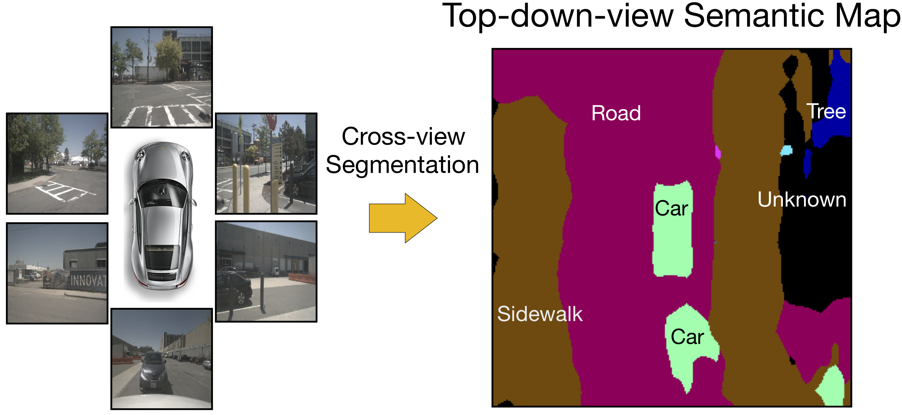

We introduce a novel spatial understanding task calls Cross-view Semantic Segmentation. In this task, top-down-view semantics are predicted from the first-view real-world observations. Input observations from multiple angles are fused together.
Cross-view Semantic Segmentation for Sensing Surroundings |
||
Bowen Pan1, Jiankai Sun2, Ho Yin Tiga Leung2, Alex Andonian1, Bolei Zhou2 |
||
1 Massachusetts Institute of Technology |
||
2 The Chinese University of Hong Kong |
||
[Paper] [Code] [Supplemental Materials] [1-min Demo Video] |
||

We introduce a novel spatial understanding task calls Cross-view Semantic Segmentation. In this task, top-down-view semantics are predicted from the first-view real-world observations. Input observations from multiple angles are fused together.
In this framework, the View Parsing Network (VPN) is proposed to parse the first-view observations into a top-down-view semantic map indicating the spatial location of all the objects at pixel-level. The view transformer module contained in VPN is designed to aggregate the surrounding information collected from first-view observations in multiple angles and modalities. To mitigate the issue of lacking real-world annotations, we train the VPN in simulation environment and utilize the off-the-shelf domain adaptation technique to transfer it to real-world data. We evaluate our VPN on both synthetic and real-world data. The experimental results show that our model can effectively make use of the information from different views and multi-modalities. Thus the proposed VPN is able to accurately predict the top-down-view semantic mask of the visible objects as well as barely seen objects, in both synthetic and real-world environments.
Framework of the View Parsing Network for cross-view semantic segmentation. The simulation part illustrates the architecture and training scheme of our VPN. And the real-world part demonstrates our domain adaptation process for transferring our VPN to the real world.
@article{pan2019crossview,
title={Cross-view Semantic Segmentation for Sensing Surroundings},
author={Pan, Bowen and Sun, Jiankai and Leung, Ho Yin Tiga and Andonian, Alex and Zhou, Bolei},
journal={arXiv preprint arXiv:1906.03560},
year = {2019}
}